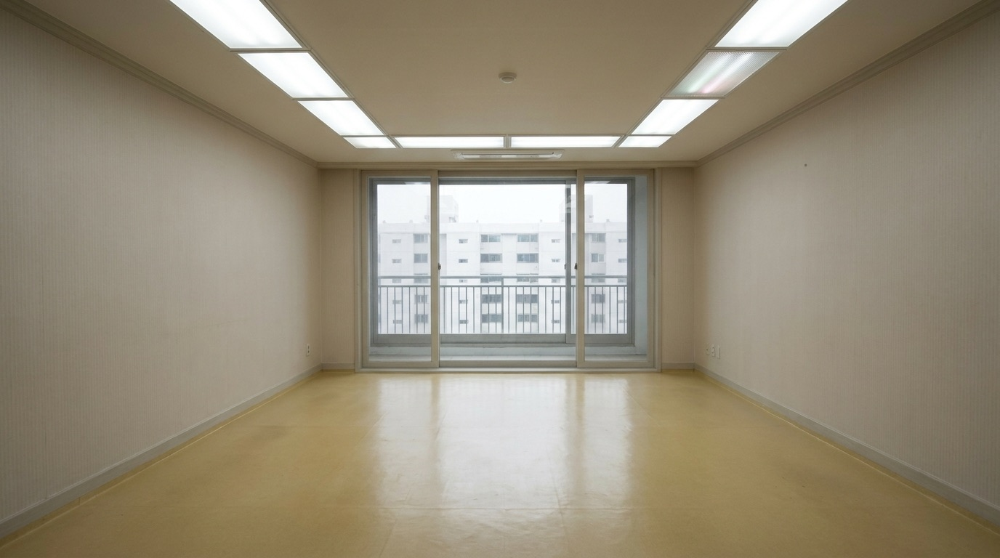

레벨 KR-0은 한국발 노클립 피해자가 최초로 도달하는 레벨로, 입주가 시작되지 않은 신축 아파트의 내부가 무한히 반복되는 공간이다. 전용면적 84㎡ 상당, 확장형 거실. 새 장판과 새 벽지, 마르지 않은 도배풀 냄새. 조명은 전 세대 점등 상태이며 그중 일부는 미세하게 명멸한다. 가구와 집기는 일절 발견되지 않는다.
각 세대의 구조는 정확히 동일하다. 현관 — 복도 — 거실 — 주방 — 안방 — 작은방 둘 — 앞뒤 베란다. 현관문을 열면 복도가 아니라 다른 세대의 현관이 나온다. 엘리베이터, 계단, 공용 복도는 발견된 바 없다. 이동은 세대에서 세대로만 가능하다.
베란다 창밖으로는 맞은편 동(棟)이 보인다. 뿌연 하늘 아래 수백 개의 창이 전부 소등되어 있으며, 어느 세대에서 관측해도 정확히 같은 풍경이다. 야간은 도래하지 않는다.
"3일째 되던 날 알았어요. 맞은편 동 창문이 전부 꺼져 있는 게 아니라, 전부 이쪽을 보고 있는 거라는 걸. 커튼 없는 창문은 밤에 그렇게 보이잖아요. 근데 여긴 밤이 안 와요. 계속 그렇게 보여요." — 방랑자 K, 체류 11일차 구조
본 레벨의 주요 위험. 도배풀 냄새에 장시간 노출된 방랑자는 두통과 함께 아래 단계를 순서대로 겪는다. M.E.G. 한국 전초기지는 이를 「정주 반응」으로 문서화했다.
| 단계 | 징후 | 조치 |
|---|---|---|
| 1 | 특정 세대가 유독 "우리 집 같다"고 느껴짐 | 경과 관찰 |
| 2 | 가구 배치를 머릿속으로 구상하기 시작 | 즉시 이동 재개 |
| 3 | 빈 거실에 앉아 쉬는 시간이 길어짐 | 동행자가 이동을 강제 |
| 4 | 해당 세대를 "우리 집"으로 지칭 | 물리적 강제 이송. 설득 무효 |
| 5 | 입주 | 구조 사례 없음 |
5단계에 도달한 방랑자는 더 이상 이동하지 않으며, 접근하는 구조대에게 "어서 오세요"라고 인사한다. 5단계 방랑자의 세대에 진입하지 마라. 들어간 문이 같은 곳으로 다시 열리지 않는다는 보고가 2건 있다.
엔티티 KR-3 「층간소음」 상주 — 일부 세대에서 윗집 소리(아이가 뛰는 소리, 의자 끄는 소리, 못 박는 소리)가 들린다. 본 레벨에 윗집은 존재하지 않는다. 어떤 방식으로도 응답하지 마라. 대응 수칙은 엔티티 문서 참조.
그 외 엔티티 밀도는 낮다. 본 레벨의 위협은 대부분 레벨 그 자체다.
본 레벨로의 노클립은 한국형 노클립 패턴을 따르며, 아래 상황에서의 발생이 보고되어 있다.
— 이사 나가는 날, 빈집을 마지막으로 둘러보고 나온 뒤 현관문을 다시 열었을 때
— 폐관 직전의 미분양 모델하우스에서 안내 동선을 역순으로 걸었을 때
— 재개발구역 공가(空家)의 "출입금지" 스티커가 붙은 문이 잠겨 있지 않았을 때
전단지가 붙은 현관문을 찾아라. 수만 개의 동일한 현관문 중 극소수에 배달 전단지가 한 장 붙어 있다. 이는 POI 「부동산」이 남기는 통로 표식으로, 해당 문은 다른 레벨로 통한다. 전단지의 전화번호로 발신을 시도하지 마라. 신호는 간다. 그 이후에 관한 좋은 기록이 없다.
도어락에 지문 자국이 남은 세대 — 즉 "살았던 집" — 의 베란다 문이 중층으로 통한 사례가 3건 보고되어 있다. 단, 심도가 단번에 깊어지므로 권장하지 않는다.
벽에 귀를 대었을 때 안내방송의 멜로디가 들리는 세대는 레벨 KR-4 「환승통로」 방면과 인접한 것으로 추정된다. 멜로디가 커지는 방향으로 이동하라.
아몬드 워터 자판기가 세대 내 주방에서 발견된 사례 4건. 위치 규칙성은 확인되지 않았다. 자판기가 있는 세대는 정주 반응 진행이 느리다는 통계가 있다.